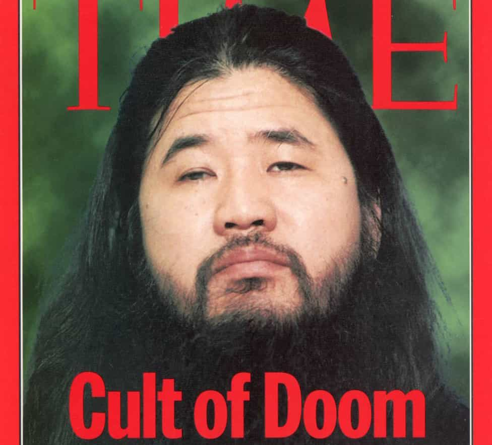

David is a strength coach and bestselling Men's Health author. You can follow him at HowToBeast.com.


Chizuo Matsumoto was born in 1955 to a large, poor family in Japan. He was born with glaucoma and subsequently lost all sight in his left eye, and retained only partial vision in his right eye. This caused him to attend a school for the blind, and pursue a career in acupuncture – a traditional Japanese occupation for the blind.
His acupuncture education led him to studying Chinese fortune telling and meditation, and this eventually instilled a belief in him that he possessed supernatural powers. In 1984, Matsumoto changed his name to Shoko Asahara and started Aum Shinrikyo, a group that began as a simple meditation and yoga class in his one bedroom apartment.
Shoko quickly became more radical. In 1992, he declared himself to be “Christ” and preached a belief system that combined aspects of Christianity and yoga with the writings of Nostradamus. He promised his rapidly growing group of followers that he would take upon himself the sins of the world, and, in turn, absolve them of their sins and transfer to them a set of supernatural powers.
Over the next few years, the group continued to attract more members, and, at the same time, controversy and attention from the Japanese public. Leading up to 1995, Shoko and Aum Shinrikyo were involved in various murders of members who tried to leave, assassination attempts of heads of other religious sects, kidnappings, and weapons manufacturing.
In 1995, the group, now numbering as many as 9,000 followers in Japan and 40,000 worldwide, reached its boiling point. On March 20, Shoko ordered a number of the group’s members to release sarin, a deadly nerve gas agent, onto five lines of the Tokyo subway. 13 people died, 50 were injured, and nearly 1000 temporarily went blind. He sits on death row in a Japanese prison cell to this day.

Despite creating a violent cult, and using it for evil intentions, Shoko demonstrates a powerful concept that nearly all persuasive leaders throughout history took advantage of: speaking to other people in terms of their own interests.
The fact is that humans are inherently selfish. We care about our own lives and our own success. And this isn’t a bad thing – we all need to take good care of our bodies and minds in order to prosper. But you must avoid the trap of becoming too self-centered and subsequently losing the ability to focus on other people.
Shoko gained his following by preaching something that was valuable to prospective members – forgiveness of sins and the promise of supernatural spiritual powers. Bear in mind, his prospective members were religious minded people with an inclination to believe controversial spiritual prophecies. He took advantage of this and gave them what they wanted – forgiveness and power.
When you deal with people, you must do the same. You must realize what it is that they want, and you must give it to them.
No, I don’t mean that you should physically give them material gifts like money or cars. I also don’t mean that you should offer them false promises to exploit them, like Shoko did. I used him as an example merely to demonstrate the power of this simple technique.
What I do mean is that you must be able to relate to the interests of whoever you’re talking to. You must be able to identify and speak to what it is that motivates them. Doing this correctly will grant you instant influence and respect in their lives. It will allow you to open them up and operate on a far higher level than the man who simply drones on talking about his own problems and desires, both annoying and tiring his conversational partner. It will set you apart.
After you’ve built a strong mental and psychological foundation by believing that you’ll succeed, and adopting the body language of a dominant individual, you must turn your attention outwards. Focusing your conversation on the other person is the final piece of the puzzle to creating an undeniable presence.

I haven’t started my own personal cult, but I have consciously used this principle many times. The freshest example in my mind is the last time I asked for a raise.
The single biggest mistake most guys make when asking for a raise is talking in terms of their own interests and accomplishment. On second thought, the biggest mistake guys make is not having the balls to ask for a raise in the first place. But when they do, they tend to fail miserably.
Put yourself in the shoes of an employer. If one of your workers comes to you and asks for more money, you sure as hell expect him to convince you that he’s worth it. The last thing you want to hear is about how he’s been working more hours or just had his biggest month in sales. Yes, these things please you, but in less he considering leaving immediately, it won’t give you much reason to throw more of your money his way.
You must take the opposite approach and talk to your employer in terms of his interests. In my recent case, this meant telling him that if he increased my hourly rate by 33% I would be able to allocate more hours to his firm (as opposed to my other gigs). I continued to explain that this would translate to the ability for me to work on a large new project the company was just taking on, and I knew they were short-handed. This would allow them to complete the project far sooner, and in a far more efficient manner.
He immediately saw the immense value I would bring to the table by granting me a raise, and promptly gave it to me – all because I spoke to him in terms of his interests, not my own.
By focusing your conversations on other people and their interests, you’re able to effectively use your mental confidence and strong physical presence to build influence, respect, and rapport in others. In short, it’s the third wheel of the presence triangle that, when used together, will allow you assume the identity of socially dominant man.
To implement this principle into your life, simply start to approach all of your conversations with the purpose of speaking to your partner’s interests. If you’re asking for a raise, this means talking about what you can do for the company.
If you’re trying to build rapport with a stranger, this is finding out what they like to do, and then asking them more about it. For example, anyone who talks to me about fitness or entrepreneurship immediately engrosses me into the conversation and quickly establishes themselves as a friend.
The applications for this concept are endless. If you’re trying to build attraction with a girl you just met, you should push to learn facts about her, which you can in turn use to tease her. Most men make the deadly mistake of trying to talk themselves up or talk about things that they might have in common with the girl. Stop. She doesn’t care about you yet. She cares about herself – use this to your advantage, make her feel comfortable in your presence, and then tease her and touch her to build attraction and make her feel dominated by your presence. Droning on about your cool job will only serve to bore her.
This is an excerpt from my new book Dominate. Click here for reviews and more info.
Read More: The Secret To Mastering Eye Contact